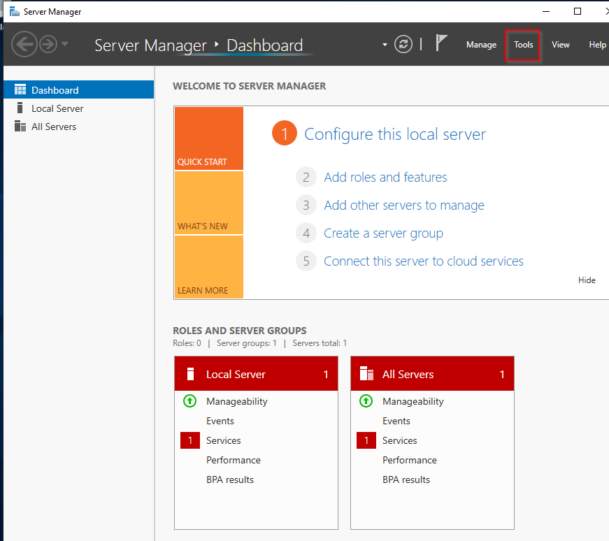

go ahead and play our domain controller machine.


"Organizational Units"

in Users we want to clean users area so we'll create an organizational unit called Groups and take all groups out of the users accounts and then drag them into Groups OU.

give this name "Groups" and say OK.


That down arrow means that the account has been disabled.


if you're a domain users that means you are able to log into the domain. We'll create a couple of domain users and we'll create another domain admin as well and just give an idea for what these accounts are going to look like.
for that


password = Password1
okey let's now create a domain admin
right click administrator > copy

password : Password@$7516
let's create another user.
right click Frank Castle > copy

password : Password2
let's double click to these users and admin and see their member of section.

because we copied this from frank castle.

we copied this from Administrator.
Let's go ahead and create fake SQL service account and we'll make this administrator but this is bad, service accounts should not be domain administrator accounts.
TCM " but i would say probably 70 percent of the time that i'm doing a pentest the service accounts are domain administrators

Password : MYpassword123$
let's open that SQL account and say we forget password in the description.

a lot of domain administrators put their passwords on the service accounts' description because they think that they're the only ones that can read them. Not true. we'll see how we can read this later on.
Okey this is good to go let's set up a file share
in server manager
File and Storage Services > Shares > TASKS > New Share

next > next

and then next > next > create > close
we used all the defaults.

why did we do that because most domain controllers have file shares.
And we want to open up 139 and 443 so that we have SMB enabled on this domain controller.
we have still some things to do
run command prompt as administrator.
we're going to create what is called SBN service principal name.
don't worry too much about what we're doing right now, we're going to talk about this way more when it comes time. And we're going to talk about the attack related to this. We're setting up an attack for Kerberroasting and that is an attack that attacks services. So we set up the sql service. We're going to attack sql service but we have to set up a service principle name which will cover a bit later on the course.
(for more information about spn https://docs.microsoft.com/en-us/windows/win32/ad/service-principal-names#:~:text=A%20service%20principal%20name%20(SPN,not%20have%20the%20account%20name. )

MARVEL our root domain and forest name as well.
We can verify that in below way.

you can see that sql service has been set.
OK now we've set up our users we have set up our Kerberroasting attack, SMB shares.
There's one last thing we need to do.

run that as administrator.


say ok
Now why are we disabling windows defender.
antivirus bypassing and evasion techniques change so quickly and significantly. A lot of these attacks are still going to work regardless of the antivirus that you have. So what is important is to know the fundamentals of the attacks.
Knowing the foundations and the basics are way more important at this stage than any evasion techniques.


so we disabled the defender So once we actually join our domain pieces to the domain we will have no windows defender enabled on them which is perfect that's how we want to attack this.
in the next lesson we'll join our user pieces into domain.